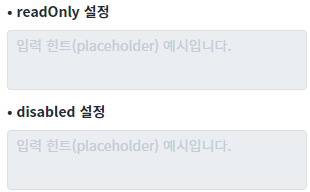
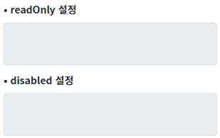

Textarea의 'showPlaceHolderOnReadOnly' 속성을 사용하여 Textarea가 읽기 전용 상태이거나 비활성화 상태일 때도 힌트 문자열(placeholder)이 표시되도록 설정한 예제입니다.
속성의 설정 값에 따른 동작은 다음과 같습니다.
true : 'placeholder' 속성의 설정 값이 입력 필드에 표시됩니다.
false : (기본 값) 'placeholder' 속성의 설정 값이 입력 필드에 표시되지 않습니다. 'setPlaceholder' 메소드는 'placeholder' 속성의 값을 변경하는 기능을 제공합니다.
속성 showPlaceHolderOnReadOnly의 설정 값을 false로 설정
속성 showPlaceHolderOnReadOnly의 설정 값을 true로 설정
예제 영역 'showPlaceHolderOnReadOnly: true'에서 테스트합니다.1
STEP 1: 초기 상태를 확인합니다.
두 개의 Textarea는 'placeholder' 속성이 '입력 힌트 예시입니다.'로 설정되어 있으며, 'showPlaceHolderOnReadOnly' 속성이 'true'로 설정된 상태입니다. 첫 번째 Textarea에는 'readOnly' 속성이 'true'로 설정되었고, 두 번째 Textarea에는 'disabled' 속성이 'true'로 설정되었습니다.
2
STEP 2: 실행된 결과를 확인합니다.
두 개의 Textarea에 'placeholder' 속성에 설정한 값이 표시됩니다.
Image 1.브라우저(Chrome) 실행 예시

예제 영역 '(기본 설정) showPlaceHolderOnReadOnly: false'에서 테스트합니다.1
STEP 1: 초기 상태를 확인합니다.
두 개의 Textarea는 'placeholder' 속성이 '입력 힌트 예시입니다.'로 설정되어 있으며, 'showPlaceHolderOnReadOnly' 속성이 'true'로 설정된 상태입니다. 첫 번째 Textarea에는 'readOnly' 속성이 'true'로 설정되었고, 두 번째 Textarea에는 'disabled' 속성이 'true'로 설정되었습니다.
2
STEP 2: 실행된 결과를 확인합니다.
두 개의 Textarea에 'placeholder' 속성에 설정한 값이 표시되지 않습니다.
Image 2.브라우저(Chrome) 실행 예시

1
Textarea의 속성을 정의합니다.
[필수] showPlaceHolderOnReadOnly="true"
읽기 전용 상태이거나 비활성화 상태일 때도 placeholder가 표시되도록 설정합니다.
(옵션 설명)
false : [default] readOnly="true" 또는 disabled="true"인 경우, placeholder 속성으로 설정된 값을 표시하지 않음
true : readOnly="true" 또는 disabled="true"인 경우, placeholder 속성으로 설정된 값을 표시
[필수] placeholder="문자열"
값이 입력되지 않은 경우 입력 필드에 표시할 문자열을 설정합니다.
예시) placeholder="입력 힌트 예시입니다."
placeholder
showPlaceHolderOnReadOnly
readOnly
disabled
setPlaceholder( placeholderStr )
setDisabled( disabled )
setReadOnly( readOnly )